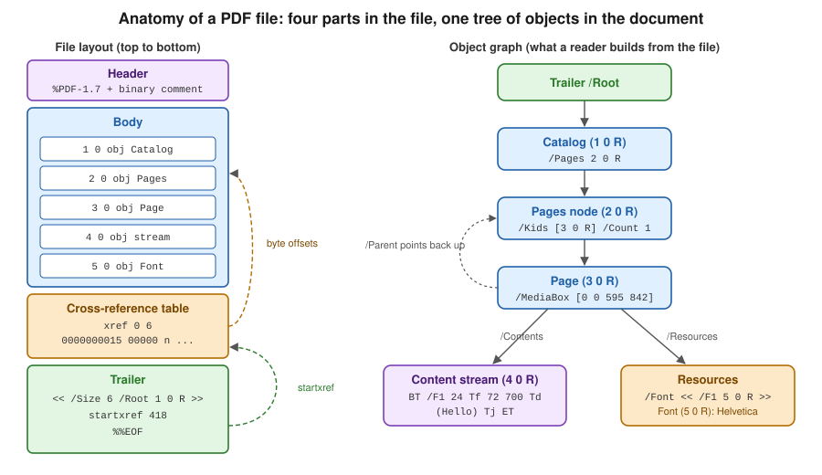
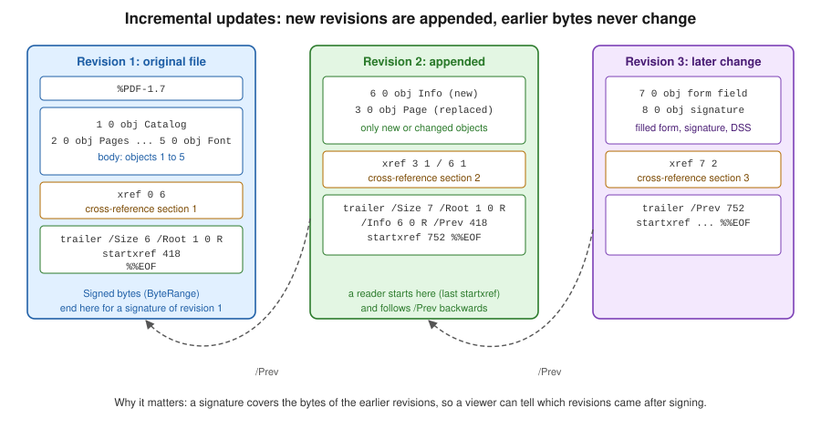

How a PDF File Works
|
This content was generated with the assistance of AI and should be verified against the official documentation before being relied on in production. |
Versions and dates on this page were checked on 2026-10-09: iText Core 9.8.0 and Apache PDFBox 3.0.8. Every Java example below was compiled with Java 21 and run against those versions.
Every library in this section, whether it lays out invoices with iText, fills a JasperReports template or signs a document, ends up writing the same few kinds of bytes. Knowing what those bytes are explains behaviour that otherwise looks arbitrary: why a file can be edited by appending to it, why a signature survives some changes and not others, why two files with the same text differ in size by a factor of three, and why a viewer can open a damaged file by rebuilding its index. This page walks through the structure of a PDF file, from a hand-written minimal file up to incremental updates and linearization, and inspects real files with iText and PDFBox. The overall map of the section is on the landing page.
The format is defined by ISO 32000. ISO 32000-1:2008 describes PDF 1.7 and ISO 32000-2:2020 describes PDF 2.0. The PDF Association gives free access to sponsored copies of the standards, see the references at the end. Everything below is common to both editions unless the text says otherwise.
The shape of a PDF file
A PDF file is not a stream that is read from beginning to end. It is a collection of numbered objects, plus an index that says where each object starts and a pointer to the root of the document. A reader finds the index by reading the end of the file, which is why a PDF that has been truncated is usually reported as damaged even though most of its bytes are present.

A classic file has four parts, in this order:
- Header
-
One line such as
%PDF-1.7, followed by a comment line with a few bytes above 127. That second line tells file-transfer tools that the content is binary and must not be converted. The version in the header can be overridden by a/Versionentry in the catalog, which is how an incremental update can raise the version of a file without touching its first bytes. - Body
-
The indirect objects: the catalog, the page tree, the pages, content streams, fonts, images and everything else. Their order in the file carries no meaning.
- Cross-reference table
-
The
xrefsection. For every object number it stores the byte offset at which the object starts, in fixed-width entries so that a reader can jump to entry n directly. Free entries chain the numbers of deleted objects for reuse. - Trailer
-
A dictionary with
/Size(the number of entries),/Root(a reference to the catalog), optionally/Info,/IDand/Encrypt, followed bystartxref, the byte offset of the lastxrefsection, and the end marker%%EOF.
Objects
The body is built from eight kinds of objects:
| Kind | Syntax | Example |
|---|---|---|
Boolean and null |
|
|
Number |
Integer or real, no exponent, no thousands separator |
|
String |
Literal in parentheses with backslash escapes, or hexadecimal in angle brackets |
|
Name |
A slash and the name; bytes outside the regular characters are written as a number sign and two hexadecimal digits |
|
Array |
Objects in square brackets, which may be of different kinds |
|
Dictionary |
Name and value pairs between double angle brackets |
|
Stream |
A dictionary, then the keyword |
Page content, images, fonts, embedded files, metadata |
Indirect object |
|
|
An indirect reference is written 5 0 R and stands for "the object numbered 5, generation 0". References are what turn a
pile of objects into a graph: a page does not contain its content stream, it refers to it, and ten pages can refer to the same
font. Only indirect objects can be referenced, and streams must always be indirect. The generation number is a relic of the
original design, where a deleted object’s number could be reused with a higher generation. In practice it is 0 for every object,
and 65535 for the head of the free list.
Comments start with % and run to the end of the line, which is why a hand-written file is easy to annotate.
A minimal PDF written by hand
The smallest useful file has a catalog, a one-page page tree, a page, a content stream and a font. Nothing else is required: the base 14 fonts, such as Helvetica, can be referenced by name without being embedded in files that do not need to conform to an archival standard.
%PDF-1.7
%âãÏÓ
1 0 obj
<< /Type /Catalog /Pages 2 0 R >>
endobj
2 0 obj
<< /Type /Pages /Kids [3 0 R] /Count 1 >>
endobj
3 0 obj
<< /Type /Page /Parent 2 0 R /MediaBox [0 0 595 842]
/Resources << /Font << /F1 5 0 R >> >> /Contents 4 0 R >>
endobj
4 0 obj
<< /Length 48 >>
stream
BT /F1 24 Tf 72 700 Td (Hello, Bookshelf!) Tj ET
endstream
endobj
5 0 obj
<< /Type /Font /Subtype /Type1 /BaseFont /Helvetica >>
endobj
xref
0 6
0000000000 65535 f
0000000015 00000 n
0000000064 00000 n
0000000121 00000 n
0000000250 00000 n
0000000348 00000 n
trailer
<< /Size 6 /Root 1 0 R >>
startxref
418
%%EOFOfficial documentation: the file syntax of clause 7 of ISO 32000-2, available free of charge from the PDF Association sponsored standards page.
Each xref entry is exactly 20 bytes: a ten-digit offset, a five-digit generation, the letter n (in use) or f (free) and a
two-byte line end. 0 6 says that the subsection starts at object 0 and has six entries. Entry 0 is always the head of the
free list. If any offset is wrong by a byte, strict readers reject the file and lenient readers fall back to scanning the
file for obj markers and rebuilding the table. Both iText and PDFBox do this, which is why damaged files often open with a log
message and not an exception.
Because the offsets are counted in bytes, a file like this is not written by hand in practice. The following program writes it and computes the
offsets. It uses a text block for the page dictionary, formatted for the length and a list of objects to number them.
package demo;
import java.io.ByteArrayOutputStream;
import java.io.IOException;
import java.nio.charset.StandardCharsets;
import java.nio.file.Files;
import java.nio.file.Path;
import java.util.ArrayList;
import java.util.List;
public class MinimalPdf {
public static void main(String[] args) throws IOException {
String content = """
BT /F1 24 Tf 72 700 Td (Hello, Bookshelf!) Tj ET""";
List<String> objects = List.of(
"<< /Type /Catalog /Pages 2 0 R >>",
"<< /Type /Pages /Kids [3 0 R] /Count 1 >>",
"""
<< /Type /Page /Parent 2 0 R /MediaBox [0 0 595 842]
/Resources << /Font << /F1 5 0 R >> >> /Contents 4 0 R >>""",
"<< /Length %d >>\nstream\n%s\nendstream".formatted(content.length(), content),
"<< /Type /Font /Subtype /Type1 /BaseFont /Helvetica >>");
ByteArrayOutputStream out = new ByteArrayOutputStream();
out.write("%PDF-1.7\n%âãÏÓ\n".getBytes(StandardCharsets.ISO_8859_1));
List<Integer> offsets = new ArrayList<>();
for (int i = 0; i < objects.size(); i++) {
offsets.add(out.size());
String body = "%d 0 obj\n%s\nendobj\n".formatted(i + 1, objects.get(i));
out.write(body.getBytes(StandardCharsets.ISO_8859_1));
}
int xrefOffset = out.size();
StringBuilder xref = new StringBuilder("xref\n0 " + (objects.size() + 1) + "\n");
xref.append("0000000000 65535 f \n");
for (int offset : offsets) {
xref.append(String.format("%010d 00000 n \n", offset));
}
xref.append("trailer\n<< /Size ").append(objects.size() + 1).append(" /Root 1 0 R >>\n")
.append("startxref\n").append(xrefOffset).append("\n%%EOF\n");
out.write(xref.toString().getBytes(StandardCharsets.ISO_8859_1));
Path target = Path.of(args.length > 0 ? args[0] : "minimal.pdf");
Files.write(target, out.toByteArray());
System.out.println("Wrote " + target + " (" + out.size() + " bytes)");
}
}Official documentation: JEP 378, text blocks and the file structure of clause 7 of ISO 32000-2, available from the PDF Association sponsored standards page.
It has no dependencies. Compile and run it with javac MinimalPdf.java and java MinimalPdf minimal.pdf, then open the result in any viewer. The syntax
it produces is the one defined in clause 7 of ISO 32000, see the references. The same file is used by the inspection programs below.
Reading a file: from the end
A reader never starts at the first byte. It does this:
-
Read the last bytes of the file, find
%%EOF, and read the number afterstartxref. -
Jump to that offset and read the
xrefsection and the trailer that follows it. -
From the trailer, follow
/Rootto the catalog, and from there/Pagesto the page tree. -
Resolve every other reference on demand, using the table to find each object.
This is why a viewer can show the first page of a ten-thousand-page file without reading the rest, and why a file served over HTTP with range requests only needs its last kilobyte and the objects of the page that is shown. It is also why the end of the file is the most important part of it.
The page tree
Pages are not stored as a list. The catalog’s /Pages entry points to the root of a tree of /Pages nodes whose leaves are
/Page dictionaries. Each node has /Kids (children) and /Count (the number of leaf pages below it), so a reader can find page
5000 by adding counts and descending, without visiting every page. A /Page points back with /Parent.
Some page attributes are inherited: /Resources, /MediaBox, /CropBox and /Rotate can be set on any /Pages node and apply
to every page below it that does not override them. This is why a page that looks like it has no size or no fonts can still
render correctly, and why code that reads /MediaBox directly from a page dictionary can get null. The libraries below
resolve inheritance in their page classes, PdfPage.getMediaBox() in iText and PDPage.getMediaBox() in PDFBox.
/MediaBox is [llx lly urx ury] in default user space units of 1/72 inch: [0 0 595 842] is A4. The origin is the lower left
corner and the y axis points up, which is the opposite of most screen coordinate systems. The iText knowledge base
explains this origin and how rotation and crop boxes change what is visible, see the references.
Content streams and operators
What is drawn on a page is described by a content stream, a stream whose bytes are a sequence of operands followed by an
operator, in postfix notation: 72 700 Td moves the text position to x = 72, y = 700. There are no variables and no control flow.
The main families of operators are:
| Operators | Purpose |
|---|---|
|
Save and restore the graphics state, which holds the colours, line width, clipping path, text state and current transformation matrix (CTM) |
|
Concatenate a matrix to the CTM: translate, scale, rotate or skew everything drawn afterwards |
|
Build a path: move to, line to, Bezier curve, rectangle, close |
|
Paint the path: stroke, fill, both, or use it as a clipping path |
|
Set the fill or stroke colour in RGB, grey or CMYK |
|
Begin and end a text object, select a font and size, position the text, show a string or an array of strings with kerning adjustments |
|
Paint an external object (an image or a form XObject) by the name it has in the page resources |
|
Apply a named graphics state dictionary: transparency, blend mode, soft mask |
Content streams refer to fonts, images and graphics states by name, and the names are looked up in the page’s /Resources
dictionary: /F1 24 Tf means "use the font that the resources call F1, at 24 points". The same indirection lets many pages
share one font object. A page’s /Contents can be one stream or an array of streams that are concatenated before parsing,
which is how iText and PDFBox add content to an existing page without rewriting what is already there.
Higher-level libraries do not expose the operators directly. iText’s PdfCanvas is a thin wrapper that emits them, and the layout
module (Document, Paragraph, Table) produces calls on it. Text in a PDF is positioned glyph by glyph: there are no
paragraphs, no line breaks and no reading order in the content stream, which is why text extraction is a heuristic and why
accessible documents need the separate structure tree described on the PDF/A and PDF/UA pages of this section.
Resources and fonts
A /Resources dictionary groups the named things a page can use: /Font, /XObject (images and reusable forms), /ExtGState,
/ColorSpace, /Pattern, /Shading and /Properties (optional content layers). Fonts are the largest of these in
real files. A font dictionary names the font and its type (/Type1, /TrueType, or /Type0 for composite fonts used with
large character sets) and, when the font is embedded, refers to a font descriptor whose /FontFile2 or /FontFile3 entry is a stream
with the font program. An embedded subset has a name with a six-letter tag, such as ABCDEF+DejaVuSans, and a /ToUnicode
CMap that tells extraction tools what each glyph means. The base 14 fonts used in the minimal example are the only ones a
reader must supply itself, and archival standards forbid relying on them. Fonts and encodings have their own pages later in this
section.
Inspecting a file with iText
The kernel module of iText 9.8 exposes the object model almost one-to-one. The Maven coordinates are the itext-core aggregator POM, which brings
the kernel, layout, forms, signing and other modules. The programs on this page neither sign nor encrypt, so they need no
Bouncy Castle adapter. iText logs through SLF4J: without a binding on the classpath its log messages are discarded, so add
one, such as slf4j-simple, to see the warnings that a lenient reader prints when it repairs a damaged file.
<dependency>
<groupId>com.itextpdf</groupId>
<artifactId>itext-core</artifactId>
<version>9.8.0</version>
<type>pom</type>
</dependency>Official documentation: itext-core on Maven Central and the iText Knowledge Base.
The first program opens a file, prints the trailer, the catalog and the type of every indirect object, and then walks the page tree from the catalog down to the first page.
package demo;
import com.itextpdf.kernel.pdf.PdfDictionary;
import com.itextpdf.kernel.pdf.PdfDocument;
import com.itextpdf.kernel.pdf.PdfName;
import com.itextpdf.kernel.pdf.PdfObject;
import com.itextpdf.kernel.pdf.PdfPage;
import com.itextpdf.kernel.pdf.PdfReader;
import java.io.IOException;
public class ITextInspect {
public static void main(String[] args) throws IOException {
try (PdfDocument pdf = new PdfDocument(new PdfReader(args[0]))) {
System.out.println("PDF version: " + pdf.getPdfVersion());
System.out.println("Pages: " + pdf.getNumberOfPages());
System.out.println("Cross-reference entries (including object 0): " + pdf.getNumberOfPdfObjects());
PdfDictionary trailer = pdf.getTrailer();
System.out.println("Trailer keys: " + trailer.keySet());
System.out.println("Catalog: " + pdf.getCatalog().getPdfObject());
for (int n = 1; n <= pdf.getNumberOfPdfObjects(); n++) {
PdfObject object = pdf.getPdfObject(n);
if (object != null) {
System.out.printf("%d 0 obj: %s%n", n, object.getClass().getSimpleName());
}
}
// Walk the page tree from the catalog down to the first page.
PdfDictionary pagesRoot = pdf.getCatalog().getPdfObject().getAsDictionary(PdfName.Pages);
System.out.println("Pages root /Count: " + pagesRoot.getAsNumber(PdfName.Count));
System.out.println("Pages root /Kids: " + pagesRoot.getAsArray(PdfName.Kids));
PdfPage page = pdf.getPage(1);
System.out.println("Page keys: " + page.getPdfObject().keySet());
System.out.println("MediaBox: " + page.getMediaBox());
System.out.println("Fonts: " + page.getResources().getResource(PdfName.Font).keySet());
}
}
}Official documentation: PdfDocument and PdfReader in the iText 9.8.0 API reference.
For minimal.pdf it reports six cross-reference entries (object 0 plus five objects), the trailer keys /Root and /Size,
the catalog <</Pages 2 0 R /Type /Catalog >>, a PdfStream for object 4 and dictionaries for the others, and the
page keys /Contents, /MediaBox, /Parent, /Resources and /Type. This program derives from the iText API
documentation of PdfDocument, PdfReader and PdfDictionary, see the references.
The next program decodes the content stream of the first page and prints each operator with its operands, using
PdfCanvasParser. It stores them in a record, a Java 16 feature that suits a read-only pair of values.
package demo;
import com.itextpdf.io.source.RandomAccessFileOrArray;
import com.itextpdf.io.source.RandomAccessSourceFactory;
import com.itextpdf.kernel.pdf.PdfDocument;
import com.itextpdf.kernel.pdf.PdfLiteral;
import com.itextpdf.kernel.pdf.PdfName;
import com.itextpdf.kernel.pdf.PdfObject;
import com.itextpdf.kernel.pdf.PdfReader;
import com.itextpdf.kernel.pdf.PdfStream;
import com.itextpdf.kernel.pdf.canvas.parser.util.PdfCanvasParser;
import com.itextpdf.io.source.PdfTokenizer;
import java.io.IOException;
import java.util.ArrayList;
import java.util.List;
public class ITextOperators {
record Operation(String operator, List<PdfObject> operands) { }
public static void main(String[] args) throws IOException {
try (PdfDocument pdf = new PdfDocument(new PdfReader(args[0]))) {
PdfStream stream = pdf.getPage(1).getFirstContentStream();
System.out.println("Filter: " + stream.get(PdfName.Filter));
byte[] decoded = stream.getBytes(); // inflated when /Filter is /FlateDecode
PdfTokenizer tokenizer = new PdfTokenizer(
new RandomAccessFileOrArray(new RandomAccessSourceFactory().createSource(decoded)));
PdfCanvasParser parser = new PdfCanvasParser(tokenizer);
List<Operation> operations = new ArrayList<>();
List<PdfObject> tokens = new ArrayList<>();
while (!parser.parse(tokens).isEmpty()) {
PdfLiteral operator = (PdfLiteral) tokens.get(tokens.size() - 1);
operations.add(new Operation(operator.toString(), List.copyOf(tokens.subList(0, tokens.size() - 1))));
}
operations.forEach(operation -> System.out.println(operation.operator() + " <- " + operation.operands()));
}
}
}Official documentation: PdfCanvasParser in the iText 9.8.0 API reference.
For minimal.pdf it prints BT, Tf with /F1 and 24, Td with 72 and 700, Tj with the string, and ET. The PdfCanvasParser class is documented
in the iText API reference. For rendering events, such as text chunks with their positions, the PdfCanvasProcessor class and its
event listeners are the higher-level route, described on the text extraction page of this section.
Inspecting a file with PDFBox
Apache PDFBox 3.0.8 has two layers. The cos package is the object model that mirrors the file, with COSDictionary, COSArray,
COSStream, COSName and COSObject, and the pdmodel package wraps it in classes such as PDDocument, PDPage and PDFont.
Files are opened with the static Loader.loadPDF since 3.0, which replaced the PDDocument.load of PDFBox 2.
<dependency>
<groupId>org.apache.pdfbox</groupId>
<artifactId>pdfbox</artifactId>
<version>3.0.8</version>
</dependency>Official documentation: getting started with PDFBox 3.0.
package demo;
import java.io.File;
import java.io.IOException;
import org.apache.pdfbox.Loader;
import org.apache.pdfbox.contentstream.operator.Operator;
import org.apache.pdfbox.cos.COSBase;
import org.apache.pdfbox.cos.COSDictionary;
import org.apache.pdfbox.cos.COSName;
import org.apache.pdfbox.cos.COSObject;
import org.apache.pdfbox.cos.COSStream;
import org.apache.pdfbox.pdfparser.PDFStreamParser;
import org.apache.pdfbox.pdmodel.PDDocument;
import org.apache.pdfbox.pdmodel.PDPage;
public class PdfBoxInspect {
public static void main(String[] args) throws IOException {
try (PDDocument document = Loader.loadPDF(new File(args[0]))) {
System.out.println("Version: " + document.getVersion());
COSDictionary trailer = document.getDocument().getTrailer();
System.out.println("Trailer: " + trailer.keySet());
System.out.println("Root: " + trailer.getCOSObject(COSName.ROOT));
// The cross-reference table: every key is (object number, generation).
document.getDocument().getXrefTable().forEach((key, offset) ->
System.out.println(key + " at " + offset));
// The page tree: PDDocument flattens it for you.
int index = 0;
for (PDPage page : document.getPages()) {
System.out.println("Page " + (++index) + " " + page.getMediaBox());
}
// Content stream operators
PDPage first = document.getPage(0);
PDFStreamParser parser = new PDFStreamParser(first);
parser.parse().forEach(token -> {
if (token instanceof Operator operator) {
System.out.println("operator " + operator.getName());
} else {
System.out.println(" operand " + token);
}
});
// Any indirect object by number
COSObject font = document.getDocument().getObjectFromPool(
new org.apache.pdfbox.cos.COSObjectKey(5, 0));
COSBase resolved = font.getObject();
System.out.println("Object 5: " + resolved);
if (resolved instanceof COSStream stream) {
System.out.println("Stream filters: " + stream.getFilters());
}
}
}
}Official documentation: PDDocument, PDFStreamParser and COSDocument in the PDFBox 3.0.8 Javadoc.
It prints the trailer keys, every cross-reference entry with its offset, the media box of every page, the operators and operands of the
first page’s content stream (PDFStreamParser returns operands as separate tokens before each Operator) and the font dictionary of object 5.
PDFBox keeps the xref table in COSDocument and flattens the page tree for you through PDDocument.getPages(). The
PDFStreamParser and COSDocument classes are documented in the PDFBox Javadoc, linked in the references, and the PDFBox
examples directory shows the higher-level uses.
When a file has to be read by eye, tools can rewrite it in a form that is easy to read and edit: the qpdf documentation describes QDF mode, which decompresses streams and annotates each object with its number. It is a debugging aid and not a conformance mechanism.
Filters, compression and object streams
Raw content streams are text-like and compress well. A stream’s /Filter entry names the encoding applied to its bytes, or an array of names
applied in order, with optional /DecodeParms. The ones that matter in practice are:
-
FlateDecode, zlib/deflate, used for content streams, fonts, ICC profiles and most images./Predictorentries improve its ratio on image rows. -
DCTDecode(JPEG) andJPXDecode(JPEG 2000) for photographs, passed through without recompression when the image already has that format. -
CCITTFaxDecodeandJBIG2Decodefor scanned black-and-white pages. -
ASCII85Decode,ASCIIHexDecode,LZWDecodeandRunLengthDecode, which are legacy or text-safe encodings that new writers rarely use.
Stream compression leaves the structure alone: every object is still written in the clear, with its n g obj header and an
entry in a plain-text xref table. PDF 1.5 added a second layer of compression:
Object streams (/Type /ObjStm) pack many small objects, such as dictionaries and arrays, into one compressed stream. Their
offsets are listed at the start of the stream, with /N giving the object count and /First the offset of the first object. Stream objects
and the encryption dictionary cannot be placed in one. Cross-reference streams (/Type /XRef) replace the plain-text table with a compressed stream
of binary rows whose field widths are given by /W, and whose entries can say that an object lives at index i of object stream n.
The stream dictionary also takes over the role of the trailer, with /Size, /Root, /Info and /ID. Together
they typically reduce the size of a file with many small objects, such as a tagged or form-heavy document, by a good fraction,
at the cost of files that cannot be read by PDF 1.4 readers.
iText controls this through WriterProperties. The program below writes the same twenty pages three ways and prints the sizes.
package demo;
import com.itextpdf.kernel.pdf.CompressionConstants;
import com.itextpdf.kernel.pdf.PdfDocument;
import com.itextpdf.kernel.pdf.PdfPage;
import com.itextpdf.kernel.pdf.PdfReader;
import com.itextpdf.kernel.pdf.PdfWriter;
import com.itextpdf.kernel.pdf.WriterProperties;
import com.itextpdf.kernel.pdf.canvas.PdfCanvas;
import java.io.ByteArrayOutputStream;
import java.io.IOException;
public class ITextCompression {
static int write(WriterProperties properties) throws IOException {
ByteArrayOutputStream out = new ByteArrayOutputStream();
try (PdfDocument pdf = new PdfDocument(new PdfWriter(out, properties))) {
for (int i = 0; i < 20; i++) {
PdfPage page = pdf.addNewPage();
PdfCanvas canvas = new PdfCanvas(page);
for (int y = 0; y < 700; y += 10) {
canvas.moveTo(36, 36 + y).lineTo(559, 36 + y);
}
canvas.stroke();
}
}
return out.size();
}
public static void main(String[] args) throws IOException {
int plain = write(new WriterProperties().setCompressionLevel(CompressionConstants.NO_COMPRESSION));
int streams = write(new WriterProperties()); // Flate on streams, classic xref table
int full = write(new WriterProperties().setFullCompressionMode(true)); // object streams + xref stream
System.out.printf("no compression: %d bytes%n", plain);
System.out.printf("flate streams: %d bytes%n", streams);
System.out.printf("full: %d bytes%n", full);
}
}Official documentation: WriterProperties and CompressionConstants in the iText 9.8.0 API reference.
In one run with iText 9.8.0 the files were 31522 bytes with no compression, 11221 bytes with Flate on streams (the default) and 8282 bytes
with full compression mode, which writes object streams and a cross-reference stream. The exact numbers depend on the content. The page
derives from the WriterProperties and CompressionConstants API documentation.
PDFBox 3 writes object streams by default: save without a second argument uses
CompressParameters.DEFAULT_COMPRESSION, and a classic xref table needs CompressParameters.NO_COMPRESSION. The
program below saves the same document both ways:
package demo;
import java.io.ByteArrayOutputStream;
import java.io.File;
import java.io.IOException;
import java.nio.charset.StandardCharsets;
import org.apache.pdfbox.Loader;
import org.apache.pdfbox.pdfwriter.compress.CompressParameters;
import org.apache.pdfbox.pdmodel.PDDocument;
public class PdfBoxCompression {
public static void main(String[] args) throws IOException {
try (PDDocument document = Loader.loadPDF(new File(args[0]))) {
ByteArrayOutputStream classic = new ByteArrayOutputStream();
document.save(classic, CompressParameters.NO_COMPRESSION);
ByteArrayOutputStream compressed = new ByteArrayOutputStream();
document.save(compressed, CompressParameters.DEFAULT_COMPRESSION);
System.out.printf("classic xref table: %d bytes%n", classic.size());
System.out.printf("object + xref streams: %d bytes, has ObjStm: %b%n", compressed.size(),
compressed.toString(StandardCharsets.ISO_8859_1).contains("/ObjStm"));
}
}
}Official documentation: CompressParameters in the PDFBox 3.0.8 Javadoc and the migration guide to PDFBox 3.0.
On the small minimal.pdf the output went from 844 bytes with a classic table to 758 bytes with object and cross-reference streams. For
a one-page file the gain is small, and the gain grows with the number of small objects. The CompressParameters constants are documented in the
PDFBox Javadoc.
Incremental updates
A PDF can be changed without rewriting it. An incremental update appends to the end of the file:
-
the new or changed objects, using the same object numbers as the ones they replace;
-
a new
xrefsection that lists only those objects; -
a new trailer whose
/Preventry holds the offset of the previousxrefsection, thenstartxrefpointing at the new section, and%%EOF.
Nothing before the appended bytes changes. A reader starts from the last startxref, finds the newest version of an object in the newest
section, and follows /Prev for the objects that were not changed. Deleting an object marks its entry free in a new section.

Running the iText program below on minimal.pdf writes an updated file whose first 601 bytes are identical to the original. useAppendMode on
StampingProperties makes PdfDocument write only what changed.
package demo;
import com.itextpdf.kernel.pdf.PdfDocument;
import com.itextpdf.kernel.pdf.PdfReader;
import com.itextpdf.kernel.pdf.PdfWriter;
import com.itextpdf.kernel.pdf.StampingProperties;
import java.io.IOException;
public class ITextIncremental {
public static void main(String[] args) throws IOException {
// Append mode keeps every original byte and adds a new body, xref section and trailer at the end.
PdfReader reader = new PdfReader(args[0]);
PdfWriter writer = new PdfWriter(args[1]);
try (PdfDocument pdf = new PdfDocument(reader, writer, new StampingProperties().useAppendMode())) {
pdf.getDocumentInfo().setTitle("Invoice 2026-0001");
}
System.out.println("Appended revision written to " + args[1]);
}
}Official documentation: StampingProperties in the iText 9.8.0 API reference.
The appended section it produced was the following. It contains the one new object, an xref subsection with a single entry, and a trailer with
/Prev 418, the offset of the original xref section. The identifier strings and the date and producer values are abbreviated here.
6 0 obj
<</ModDate(D:...)/Producer(...)/Title(Invoice 2026-0001)>>
endobj
xref
6 1
0000000602 00000 n
trailer
<</ID [...]/Info 6 0 R/Prev 418/Root 1 0 R/Size 7>>
startxref
752
%%EOFOfficial documentation: incremental updates are described in clause 7.5.6 of ISO 32000-2, available from the PDF Association sponsored standards page.
PDFBox does the same with saveIncremental, and requires you to mark the objects that have changed, because it only writes objects
flagged as needing an update:
package demo;
import java.io.File;
import java.io.FileOutputStream;
import java.io.IOException;
import org.apache.pdfbox.Loader;
import org.apache.pdfbox.pdmodel.PDDocument;
import org.apache.pdfbox.pdmodel.PDDocumentInformation;
public class PdfBoxIncremental {
public static void main(String[] args) throws IOException {
try (PDDocument document = Loader.loadPDF(new File(args[0]));
FileOutputStream out = new FileOutputStream(args[1])) {
PDDocumentInformation info = new PDDocumentInformation();
info.setTitle("Invoice 2026-0001");
document.setDocumentInformation(info);
// Mark what changed, so only that goes into the appended section.
document.getDocumentCatalog().getCOSObject().setNeedToBeUpdated(true);
document.getDocument().getTrailer().setNeedToBeUpdated(true);
info.getCOSObject().setNeedToBeUpdated(true);
document.saveIncremental(out);
}
}
}Official documentation: PDDocument.saveIncremental in the PDFBox 3.0.8 Javadoc and the PDFBox signing example.
The iText stamping classes and StampingProperties are described in the API documentation. PDFBox documents saveIncremental in the Javadoc and
its signing examples use it.
Why incremental updates matter for signatures
A digital signature in a PDF is stored in a signature dictionary whose /ByteRange [0 a b c] lists the byte ranges that were hashed: the
whole file except the hole that holds the signature value itself. Because the hash covers the bytes and not the objects, rewriting the file
in any way invalidates the signature, even if the visible result is the same. Appending is different: the signed bytes stay where they
were, so the signature still verifies, and a viewer can tell, by comparing the end of the signed range with the length of the file, that
something was added afterwards.
That gives incremental updates three jobs in the signing pages of this section:
-
adding a second signature to a document that is already signed, for example the customer’s signature on an invoice the shop signed first;
-
adding validation data such as certificates, revocation responses and the document timestamp, which is how long-term PAdES levels are built, as new revisions;
-
filling in form fields or adding annotations when the document’s certification level allows it. What is allowed is defined by the signature’s permissions (the DocMDP transform), and the viewer decides whether to show the signature as valid, valid with later changes, or broken.
Signing code therefore opens the existing file in append mode, which is why iText’s signer takes a StampingProperties.
Incremental updates have a second consequence that is easy to forget. Because nothing is removed, the original content stays in the file. A page that was
edited, a form field that was cleared, an object that was deleted by appending a free entry: all of these are still present in earlier revisions
and can be recovered by anyone with a text editor or by following the older /Prev chain. Real removal of content, such as redaction, needs
the file to be rewritten with only the reachable objects, which is what iText’s non-append stamping mode and PDFBox’s normal save (compressed by default since 3.0) do, and it
needs content-level redaction in addition. Rewriting also invalidates earlier signatures, so the order of operations matters: change, then
sign, then only append.
Linearization
A linearized file, also called Fast Web View, is a PDF whose objects are arranged so that the first page can be displayed before the rest of the
file has been downloaded. It starts with a linearization parameter dictionary as the first object after the header, with entries such as
/Linearized (the version), /L (the file length), /O (the number of the first page’s object), /N (the number of pages) and /H (the hint
stream location), followed by a first-page cross-reference section and the first page’s objects, with the rest of the file after them. A viewer reading from
a server issues a range request for the start, learns the file length and the first page’s extent, and renders
the page while the rest streams. The mechanism is described in the standard’s annex on linearized PDF.
Most documents produced on a server are not linearized, and for generated files that are mailed or downloaded as a whole it usually does not
matter. It matters for large files that people read in a browser from a remote server: long reports, catalogues and scanned books.
Neither iText nor PDFBox writes linearized files. The usual practice is to post-process with qpdf (qpdf --linearize in.pdf out.pdf),
which is also able to check the result. Linearization uses a layout in which incremental updates do not fit well: appending changes the end of the file, so a
file edited that way is no longer linearized in the strict sense, although most viewers keep working with it.
You can tell whether a file is linearized by looking at its start:
package demo;
import java.io.IOException;
import java.nio.charset.StandardCharsets;
import java.nio.file.Files;
import java.nio.file.Path;
public class LinearizedCheck {
public static void main(String[] args) throws IOException {
byte[] head = new byte[1024];
try (var in = Files.newInputStream(Path.of(args[0]))) {
int read = in.readNBytes(head, 0, head.length);
String text = new String(head, 0, read, StandardCharsets.ISO_8859_1);
// A linearized file starts with an object whose dictionary has /Linearized.
System.out.println(args[0] + " linearized: " + text.contains("/Linearized"));
}
}
}Official documentation: qpdf, linearization.
Java 21 idioms on this page
All the examples of this page, and the examples of every page of this section, are written in current Java. The books consulted for this section are
about Java 1.3 to 5 and iText 1.x, and predate generics, try-with-resources, var, text blocks, records and pattern matching. In their code, streams are closed in
finally blocks, collections are raw, and loops use index variables. The examples here use the Java 21 language
instead:
-
try-with-resources for everyPdfDocument,PDDocumentand stream, so that a document is closed, and the trailer written, even when an exception occurs. This matters more than usual in PDF code, because an unclosed iText document is an invalid file. -
Text blocks for multi-line literals such as PDF syntax, JRXML snippets and HTML, and
String.formattedfor values. -
Records for small immutable carriers such as
Operationabove, andList.ofandList.copyOffor immutable lists. -
Pattern matching for
instanceof, as in theCOSStream streamtest in the PDFBox example, in place of a cast after a check. -
PathandFilesinstead ofjava.io.Filewhere a library accepts them, andvarwhere the type is obvious from the right-hand side.
The language changes are summarised in the Oracle documentation for Java 21 and specified in JEP 378 (text blocks), JEP 395 (records)
and JEP 394 (pattern matching for instanceof).
References
-
ISO 32000 sponsored standards, PDF Association: free access to ISO 32000-2 (PDF 2.0) and related standards.
-
ISO 32000-2:2020, Document management: Portable document format, Part 2: PDF 2.0 and the 2008 edition (ISO 32000-1, PDF 1.7) on the ISO site.
-
Where is the origin (x,y) of a PDF page?, iText Knowledge Base
-
PdfDocument, PdfReader, PdfCanvasParser and PdfCanvas, iText 9.8.0 API
-
WriterProperties, CompressionConstants and StampingProperties, iText 9.8.0 API
-
Migration to PDFBox 3.0, for
Loader.loadPDFandCompressParameters -
PDDocument, PDFStreamParser and COSDocument, PDFBox 3.0.8 Javadoc
-
PDFBox examples, pdmodel and the signing example that uses incremental saving
-
Java language changes, Java SE 21 with JEP 378, JEP 395 and JEP 394